BF02 — CIBIL Score Kya Hai Aur Yeh Itna Important Kyun Hai?
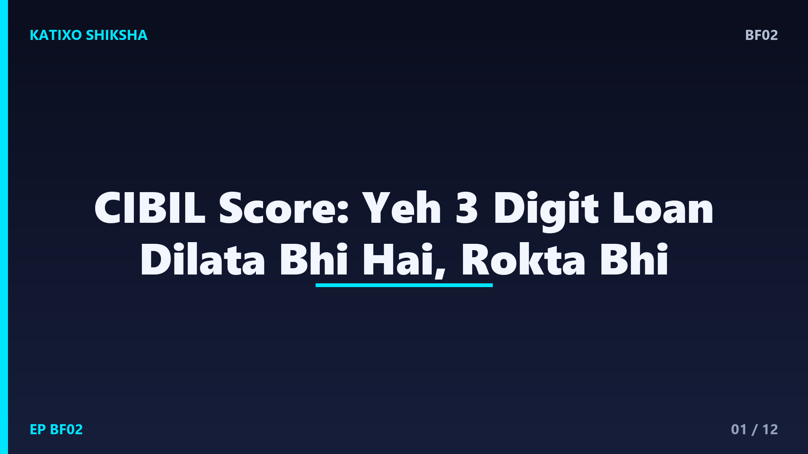
Slide 1दोस्तों, सोचो आपको एक home loan या नया credit card चाहिए, आप bank जाते हो, और bank सबसे पहले एक तीन अंकों का number देखता है — आपका CIBIL score. यही number तय करता है कि loan मिलेगा या नहीं, और कितने ब्याज पर। बहुत लोगों को इसके बारे में तब पता चलता है जब उनका loan reject हो जाता है। आज Katixo KhojLab की इस finance explainer में हम आसान भाषा में समझेंगे — CIBIL score है क्या, बनता कैसे है, और इसे अच्छा कैसे रखें। चलो शुरू करें।
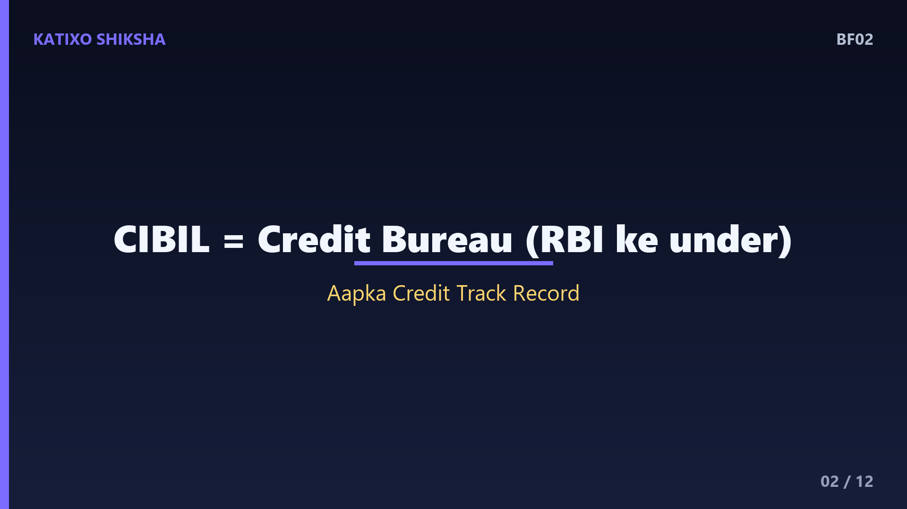
Slide 2सबसे पहले — CIBIL है क्या? CIBIL का पूरा नाम है Credit Information Bureau India Limited, जिसे आज TransUnion CIBIL कहते हैं। ये एक credit bureau है जो RBI के under काम करता है। इसका काम है — हर इंसान का credit का track record रखना। यानी आपने कितने loan लिए, कितने credit card हैं, EMI और bill समय पर भरे या नहीं — ये सारी जानकारी bankें CIBIL को भेजती हैं। फिर CIBIL इस सबको मिलाकर एक तीन अंकों का number बनाता है, जिसे हम CIBIL score कहते हैं।
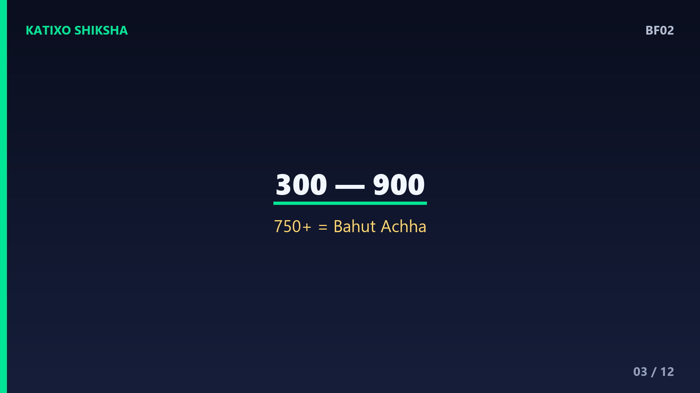
Slide 3अब ये score होता कितने का है? CIBIL score 300 से लेकर 900 के बीच होता है। जितना ज़्यादा, उतना अच्छा। मोटा-मोटी समझो — 750 से ऊपर का score बहुत अच्छा माना जाता है, यहाँ loan आसानी से और कम ब्याज पर मिल जाता है। 700 से 750 ठीक-ठाक है। 650 से नीचे आते ही bankें सतर्क हो जाती हैं, और 600 से नीचे loan reject होने के chance बहुत बढ़ जाते हैं। अगर आपने कभी loan या card लिया ही नहीं, तो आपका score NA या NH दिखा सकता है, यानी कोई history नहीं।
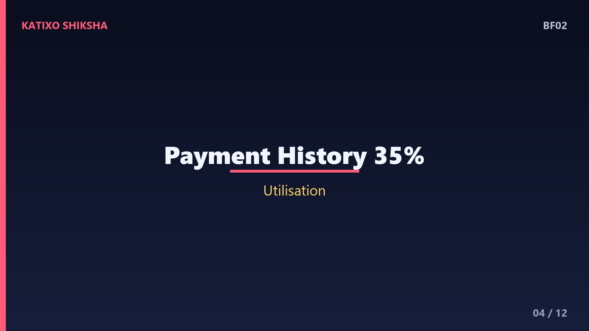
Slide 4अब सबसे ज़रूरी — ये score बनता किन चीज़ों से है? इसमें सबसे बड़ा हिस्सा है आपकी payment history, यानी आप EMI और credit card bill समय पर भरते हो या नहीं। ये अकेले लगभग 30 से 35 प्रतिशत असर डालता है। दूसरा बड़ा factor है credit utilisation — यानी आपकी card limit का कितना हिस्सा आप इस्तेमाल करते हो। तीसरा — आपका credit कितना पुराना है, यानी credit age. और चौथा — आपने कितनी बार और किस-किस तरह का loan लिया है, यानी credit mix और नई पूछताछ।
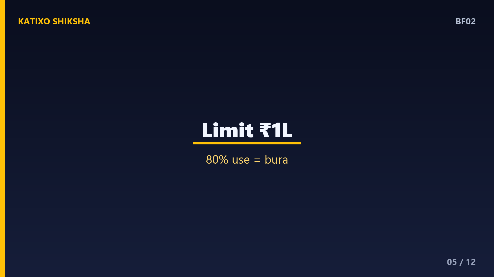
Slide 5Credit utilisation को एक example से समझो, क्योंकि यहाँ ज़्यादातर लोग गलती करते हैं। मान लो आपके credit card की limit है एक लाख रुपये। अगर आप हर महीने 80 हज़ार रुपये use कर रहे हो, तो आपका utilisation हुआ 80 प्रतिशत — ये बहुत ज़्यादा है और score गिराता है। नियम कहता है — utilisation 30 प्रतिशत से नीचे रखो। यानी एक लाख limit पर महीने में 30 हज़ार से ज़्यादा use ना करो, या बीच-बीच में bill भरते रहो। इससे bank को लगता है कि आप पैसे को control में रखते हो।
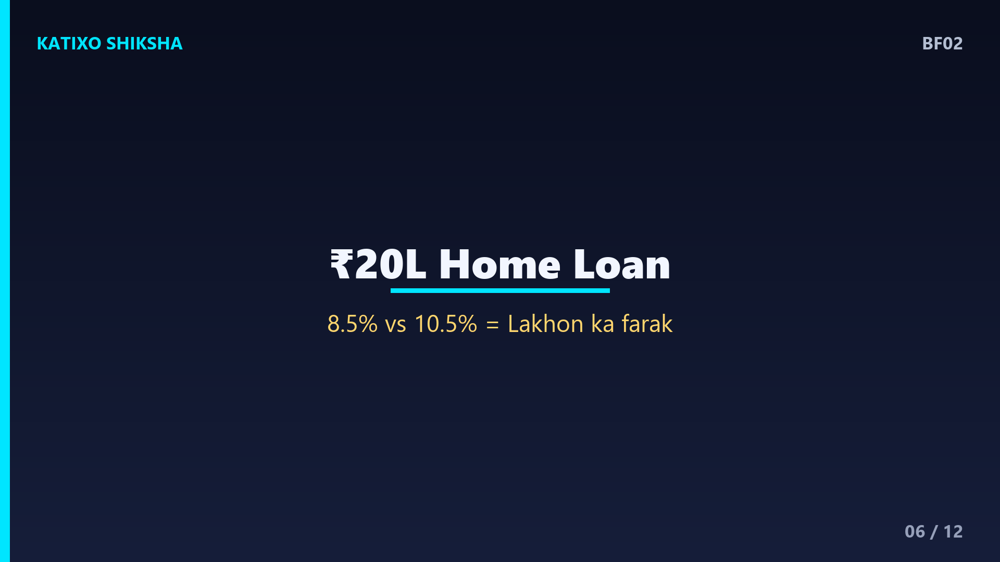
Slide 6अब समझो ये score इतना important क्यों है, सिर्फ़ हाँ या ना से ज़्यादा। ये असल में आपके पैसे बचाता या लुटाता है। एक example — मान लो आप 20 लाख का home loan 20 साल के लिए ले रहे हो। अच्छे CIBIL score वाले को मिलता है मान लो 8.5 प्रतिशत ब्याज, और कमज़ोर score वाले को 10.5 प्रतिशत। ये 2 प्रतिशत का फ़र्क छोटा लगता है, पर 20 साल में इसका मतलब है लाखों रुपये ज़्यादा ब्याज। अच्छा score सिर्फ़ loan नहीं दिलाता, आपके लाखों रुपये भी बचाता है।
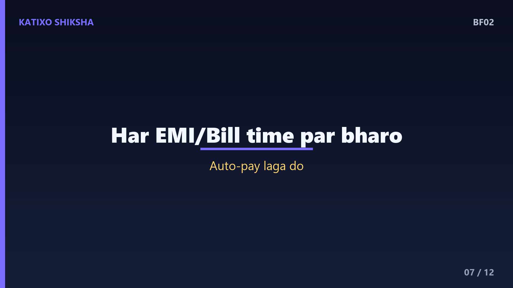
Slide 7अब चलते हैं practical tips की तरफ़ — अच्छा score कैसे बनाएँ और बनाए रखें। Tip नंबर एक, और सबसे ताक़तवर — हर EMI और हर credit card bill की due date से पहले payment करो, एक भी मत चूको। चाहे minimum due हो, पर समय पर ज़रूर भरो। आप auto-pay लगा सकते हो ताकि कभी भूलो ना। एक भी late payment आपके record में सालों तक रहता है। समय पर भरना — यही 35 प्रतिशत वाला सबसे बड़ा factor है, और यही सबसे ज़्यादा फ़र्क डालता है।
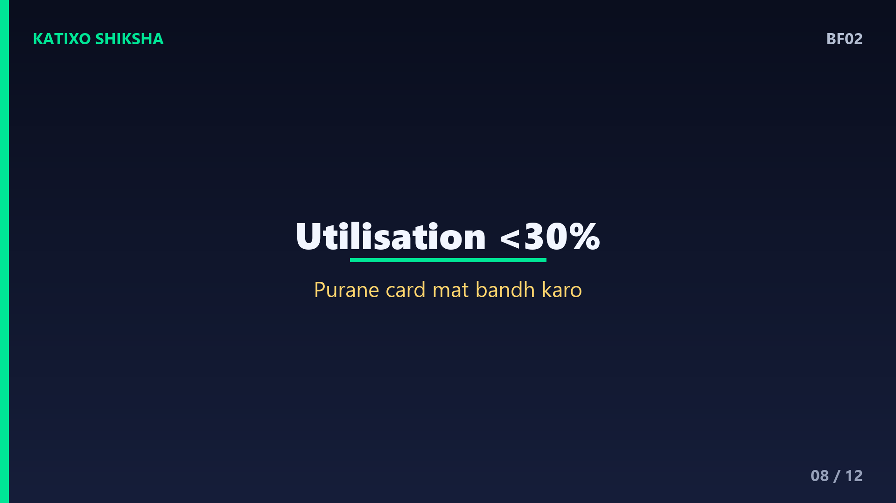
Slide 8Tip नंबर दो — utilisation कम रखो, जैसे हमने example में देखा, 30 प्रतिशत से नीचे। Tip नंबर तीन — पुराने credit card बंद मत करो जल्दबाज़ी में, क्योंकि पुराना card आपके credit की उम्र बढ़ाता है, जो score के लिए अच्छा है। Tip नंबर चार — एक साथ कई loan या card के लिए apply मत करो। हर बार जब आप apply करते हो, bank CIBIL से पूछताछ करता है, जिसे hard enquiry कहते हैं, और बहुत सारी enquiries score को थोड़ा गिरा देती हैं।
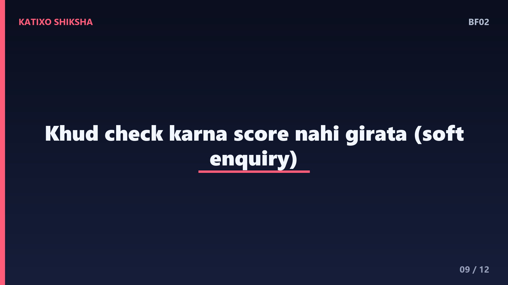
Slide 9अब कुछ common गलतफ़हमियाँ दूर कर लें। पहली — बहुत लोग सोचते हैं कि अपना खुद का score check करने से score गिर जाता है। ये गलत है। जब आप खुद अपनी report देखते हो, उसे soft enquiry कहते हैं, और इससे score पर कोई असर नहीं पड़ता। दूसरी गलतफ़हमी — credit card इस्तेमाल करना बुरा है। सच ये है कि card समझदारी से use करके समय पर भरना तो score बनाता है। तीसरी — एक बार score गिर गया तो हमेशा के लिए ख़राब। नहीं, अच्छी habits से ये धीरे-धीरे सुधरता है।
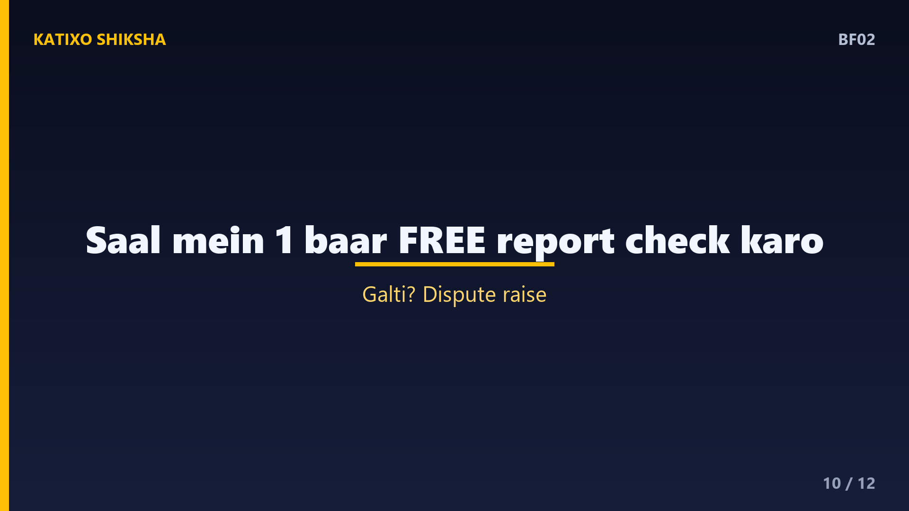
Slide 10एक बहुत ज़रूरी habit — साल में कम से कम एक बार अपनी CIBIL report ज़रूर check करो। RBI के नियम के मुताबिक़ आप साल में एक बार free में अपनी full credit report देख सकते हो। इसमें देखो कि कहीं कोई गलत loan या card आपके नाम पर तो नहीं चढ़ा, क्योंकि कभी-कभी bank की गलती या fraud से गलत entry आ जाती है। अगर कोई गलती दिखे तो CIBIL की website पर dispute raise करो। ये एक छोटी सी आदत आपको बड़े नुकसान और fraud से बचा सकती है।
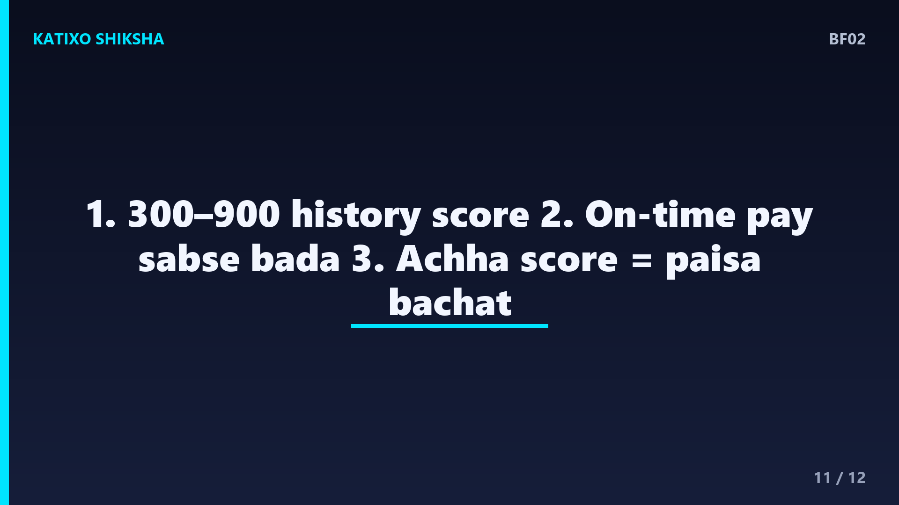
Slide 11तो चलो एक quick recap करते हैं, तीन points में। एक — CIBIL score 300 से 900 के बीच का एक number है, जो आपकी पूरी credit history बताता है, और 750 से ऊपर बहुत अच्छा माना जाता है। दो — इसमें सबसे बड़ा factor है समय पर payment, उसके बाद कम utilisation, पुराना credit और कम enquiries। तीन — अच्छा score सिर्फ़ loan नहीं दिलाता, कम ब्याज दिलाकर आपके लाखों रुपये बचाता है, इसलिए इसे संभालकर रखो।
Slide 12तो दोस्तों, CIBIL score को अपनी financial report card की तरह देखो — जितनी अच्छी आपकी आदतें, उतना बेहतर ये number, और उतने ज़्यादा फ़ायदे ज़िंदगी भर। शुरुआत आज से करो — auto-pay लगाओ, utilisation कम रखो, और साल में एक बार report check करो। ये छोटी habits बड़ा फ़र्क डालती हैं। Aisi aur simple finance explainers ke liye Katixo KhojLab ko subscribe karein! मिलते हैं अगले episode में। Ye general educational info hai, financial advice nahi.